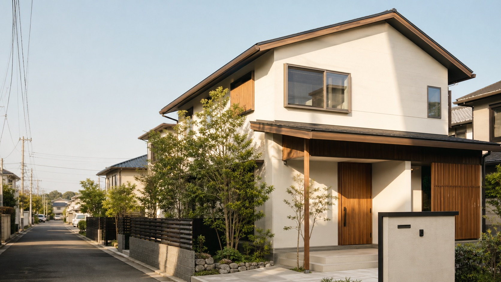
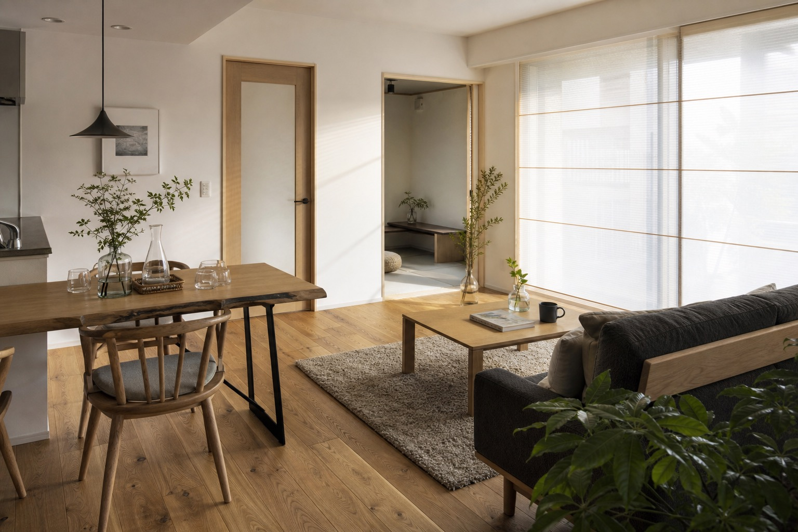
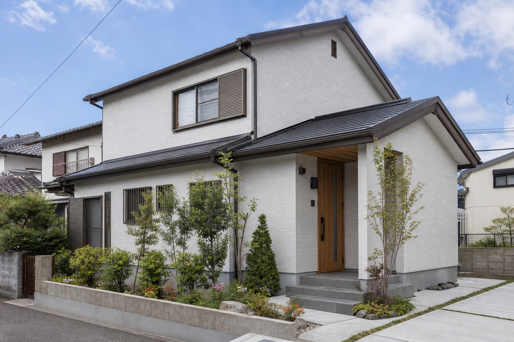
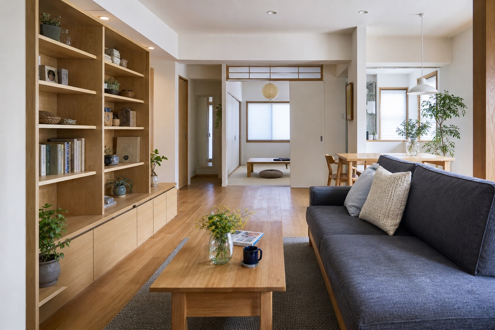
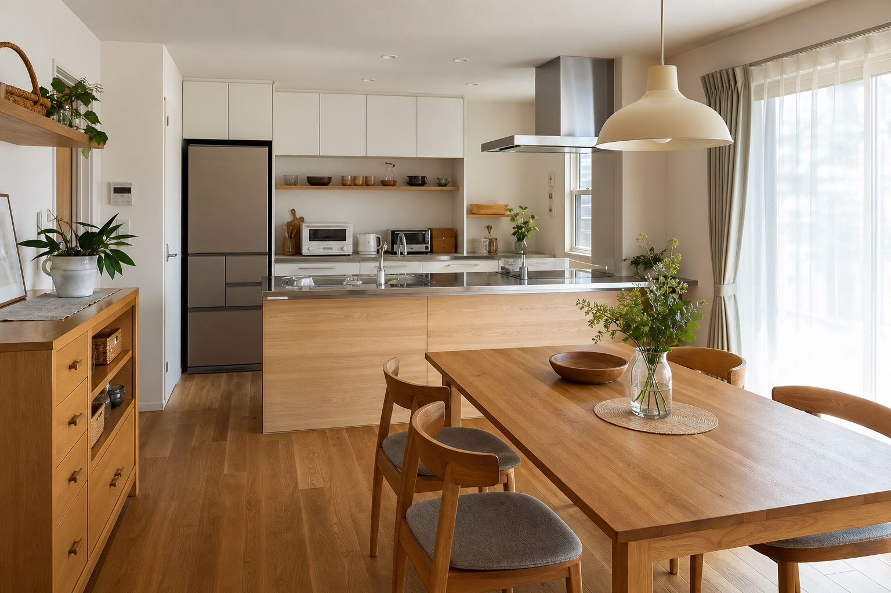

水まわり
キッチン、浴室、トイレ、洗面スペース。家族構成や生活スタイルの変化に合わせた改修相談。
このページは営業提案用サンプルです。公式サイトではありません。

仮画像北九州市・近郊のリフォーム相談
水まわりから外装、施設改修まで。現場を見て、状態を伝え、納得して進める三光工務店のリフォーム。
Concept
公式サイトでは、キッチン・浴室・トイレ・洗面といった住まいのリフォームに加え、アパート・マンションの大規模修繕、医療・福祉施設、工場施設の改修メンテナンスまで幅広く案内されています。
このデモでは、相談のしやすさだけでなく、現場調査、報告、工事後のフォローまでが伝わる落ち着いた構成にしています。

仮画像Services
公式サイト掲載情報をもとに分類。掲載前に表現と優先順位は要調整です。
キッチン、浴室、トイレ、洗面スペース。家族構成や生活スタイルの変化に合わせた改修相談。
クロス貼替、動線改善、使いにくさの解消など、日々の暮らしに近いリフォーム。
塗装、防水、屋根、板金、エクステリア工事。建物の状態に応じて提案。
アパート・マンション、医療・福祉施設、工場施設の改修メンテナンスにも対応。
Why Sanko
Works
実在しない施工名は作らず、公式サイトで確認できる傾向に沿った仮画像のみ掲載しています。

仮画像
仮画像
仮画像Consultation
公式サイトでは無料相談と、電話・メールでの問い合わせ導線が確認できます。見学会は「OPENHOUSEのお知らせ」がニュースに確認できるため、開催情報がある場合はここに掲載できます。
相談フォームへCompany
Contact
このフォームは営業提案用サンプルです。実際には送信されません。
0120-35-4649